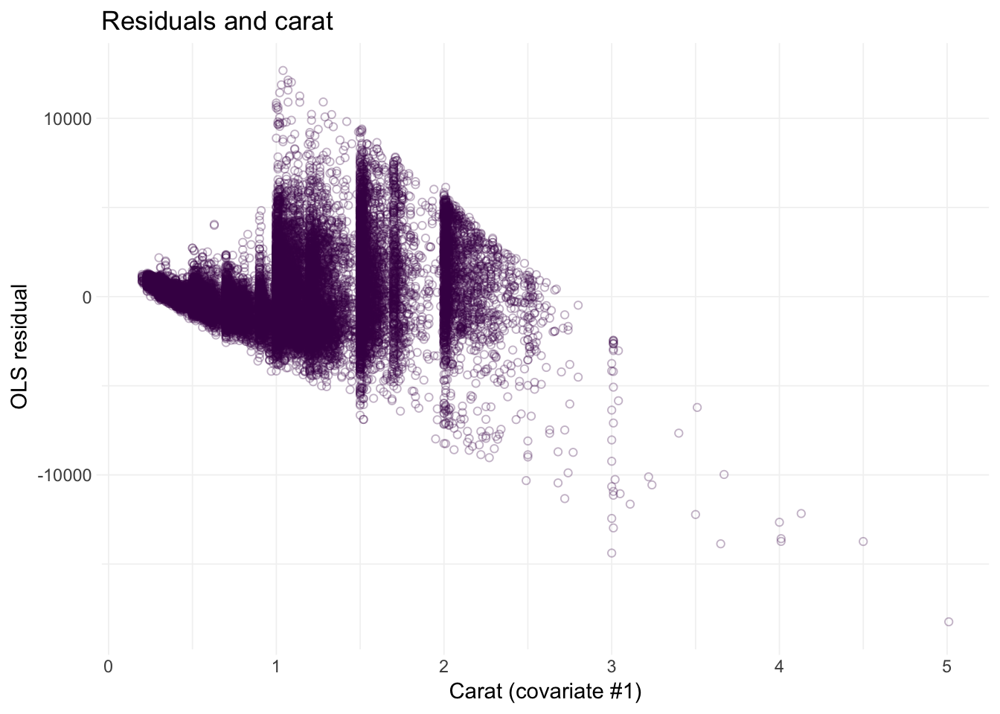
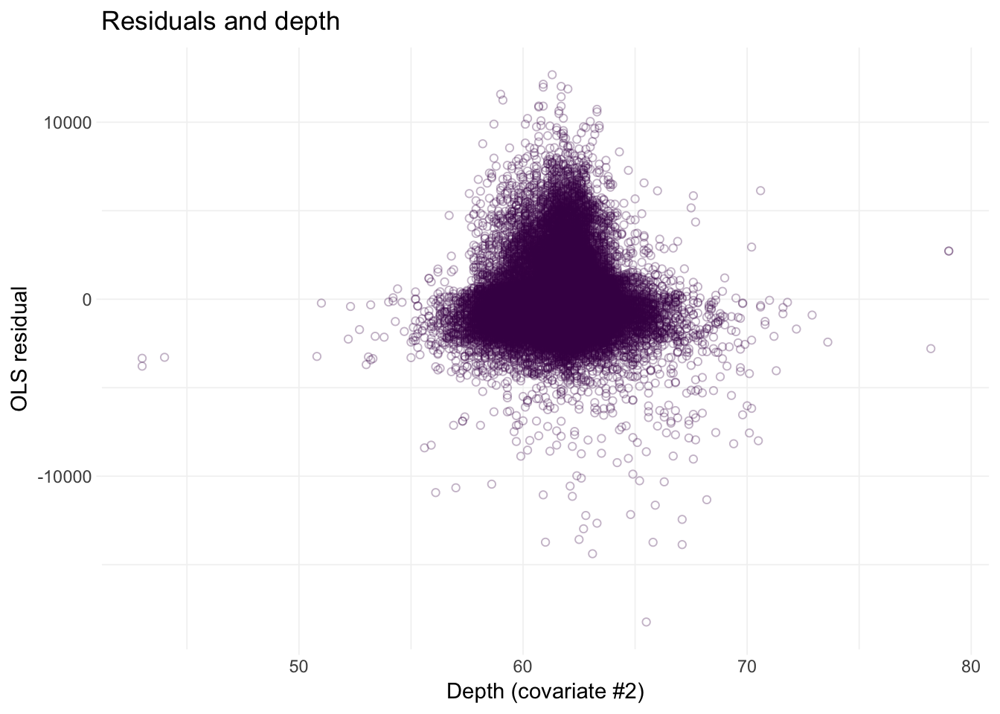
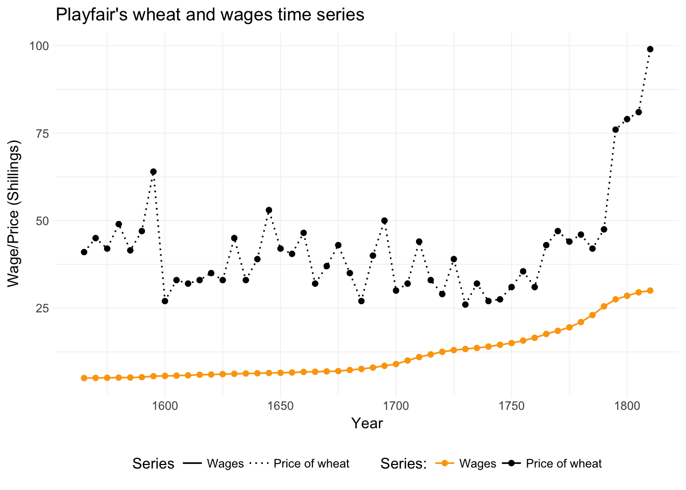
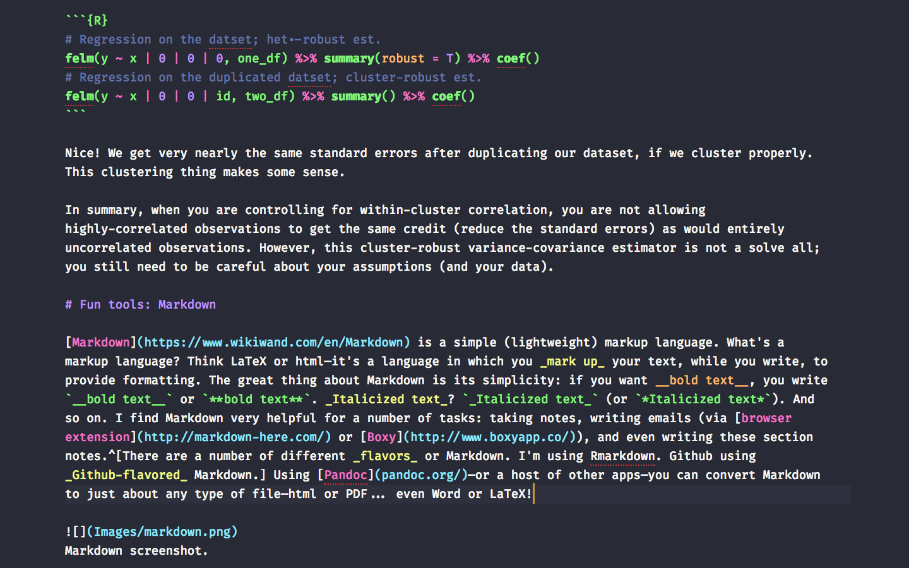

Last week we discussed standard errors. Specifically, we derived standard errors for linear combinations of the OLS estimator using (1) analytically derived formulas and (2) the Delta Method. We then applied the Delta Method for nonlinear combinations of the OLS estimator.
More standard errors! We return to our (restrictive) assumption of spherical errors and then relax this assumption to allow for heteroskedasticity and correlated disturbances.
Packages:
sandwichHistDatarobustbasetidyrdplyr, lfe, magrittr, ggplot2, and viridisI hope you are starting to see that standard errors (and inference) are really important. Thus far, we have tended to assume spherical disturbances—possibly allowing for heteroskedasticity. However, the world is not always this simple. There are times—many times—where assuming each of your disturbances is independent from each of your other disturbances does not seem reasonable. For instance, if you have repeated observations from the same unit (e.g., monthly observations for each state in the United States), it seems likely that the disturbances will correlated within states—not to mention correlation of neighboring states. Let’s think about how we can adjust our model to incorporate this reality.
There’s been a lot1 of discussion lately on (1) the incentives journals (and academia, more generally) set for researchers, (2) a culture of mining datasets to find statistical (and surprising) results, (3) a strange asymmetry for the importance of p-values just below 0.05, and (4) a replication crisis in the social sciences. Obviously these four parts are related.2
In this vein—and on the topic of inference—Alberto Abadie recently issued an interesting NBER working paper on the importance of “null results” and the inflation of the importance of rejecting the null.
Statistical Non-Significance in Empirical Economics
Abstract: Significance tests are probably the most common form of inference in empirical economics, and significance is often interpreted as providing greater informational content than non-significance. In this article we show, however, that rejection of a point null often carries very little information, while failure to reject may be highly informative. This is particularly true in empirical contexts that are typical and even prevalent in economics, where data sets are large (and becoming larger) and where there are rarely reasons to put substantial prior probability on a point null. Our results challenge the usual practice of conferring point null rejections a higher level of scientific significance than non-rejections. In consequence, we advocate a visible reporting and discussion of non-significant results in empirical practice.
Andrew Gelman has a nice blog post and paper on a similar common misunderstanding in inference: that which does not kill my result makes it stronger.
In my opinion, these topics are pretty serious and are definitely worth keeping in mind when you conduct your own research.
Back to standard errors. Let’s (briefly) review.
We define (and estimate) the standard error (s.e.) of an arbitrary estimator \(\hat\theta\) as \(\sqrt{\mathop{\widehat{\text{Var}}}\left(\hat{\theta}\right)}\).
In the case of OLS, we assume a data-generating process of
\[ \mathbf{y} = \mathbf{X} \boldsymbol{\beta} + \boldsymbol{\varepsilon} \]
and our estimator of \(\boldsymbol{\beta}\) is
\[ \mathbf{b} = \left( \mathbf{X}^\prime \mathbf{X} \right)^{-1} \mathbf{X}^\prime \mathbf{y} \]
The variance of this estimator is
\[ \mathop{\text{Var}} \left( \mathbf{b} | \mathbf{X} \right) = \left( \mathbf{X}^\prime \mathbf{X} \right)^{-1} \mathbf{X}^\prime \boldsymbol{\Sigma} \mathbf{X} \left( \mathbf{X}^\prime \mathbf{X} \right)^{-1} \]
We know \(\mathbf{X}\). The challenge here is that \(\boldsymbol{\Sigma}\)—the variance-covariance matrix of the disturbances—is generally unknown. Let’s write out \(\boldsymbol{\Sigma}\):3
\[ \boldsymbol{\Sigma} = \left[\begin{array}{cccc} \mathop{\text{Var}}\left(\varepsilon_1\right) & \mathop{\text{Cov}}\left(\varepsilon_1, \varepsilon_2\right) & \cdots & \mathop{\text{Cov}}\left(\varepsilon_1, \varepsilon_N\right) \\ \mathop{\text{Cov}}\left(\varepsilon_2, \varepsilon_1 \right) & \mathop{\text{Var}}\left(\varepsilon_2\right) & \cdots & \mathop{\text{Cov}}\left(\varepsilon_2, \varepsilon_N\right) \\ \vdots & \vdots & \ddots & \vdots \\ \mathop{\text{Cov}}\left(\varepsilon_N, \varepsilon_1\right) & \mathop{\text{Cov}}\left(\varepsilon_N, \varepsilon_2\right) & \cdots & \mathop{\text{Var}}\left(\varepsilon_N\right) \end{array}\right] \]
which we can write a bit more simply
\[ \boldsymbol{\Sigma} = \left[\begin{array}{cccc} \varepsilon_1^2 & \varepsilon_1 \varepsilon_2 & \cdots & \varepsilon_1 \varepsilon_N \\ \varepsilon_2 \varepsilon_1 & \varepsilon_2^2 & \cdots & \varepsilon_2 \varepsilon_N \\ \vdots & \vdots & \ddots & \vdots \\ \varepsilon_N \varepsilon_1 & \varepsilon_N \varepsilon_2 & \cdots & \varepsilon_N^2 \end{array}\right] \]
To estimate \(\boldsymbol{\Sigma}\), we make assumptions.
We started this course by assuming spherical errors, i.e., the disturbances (errors) are independently and identically distributed. In other words, we assumed \(\mathop{\text{Var}}\left( \varepsilon_i \right) = \sigma^2\) and \(\mathop{\text{Cov}}\left(\varepsilon_i, \varepsilon_j\right) = 0\) for \(i\neq j\).
Under the spherical-error assumption, we get a very simple form for \(\boldsymbol{\Sigma}\) (plugging in the implied values of variance and covariance):
\[ \boldsymbol{\Sigma} = \left[\begin{array}{cccc} \sigma^2 & 0 & \cdots & 0 \\ 0 & \sigma^2 & \cdots & 0 \\ \vdots & \vdots & \ddots & \vdots \\ 0 & 0 & \cdots & \sigma^2 \end{array}\right] \]
Under the assumption of spherical errors, the variance of the OLS estimator becomes
\[ \begin{aligned} \mathop{\text{Var}_\text{Sph}} \left(\mathbf{b} | \mathbf{X}\right) &= \left( \mathbf{X}^\prime \mathbf{X} \right)^{-1} \mathbf{X}^\prime \boldsymbol{\Sigma} \mathbf{X} \left( \mathbf{X}^\prime \mathbf{X} \right)^{-1} \\ &= \left( \mathbf{X}^\prime \mathbf{X} \right)^{-1} \mathbf{X}^\prime \sigma^2 \mathbf{I}_N \mathbf{X} \left( \mathbf{X}^\prime \mathbf{X} \right)^{-1} \\ &= \sigma^2 \left( \mathbf{X}^\prime \mathbf{X} \right)^{-1} \mathbf{X}^\prime \mathbf{X} \left( \mathbf{X}^\prime \mathbf{X} \right)^{-1} \\ &= \sigma^2 \left( \mathbf{X}^\prime \mathbf{X} \right)^{-1} \end{aligned} \]
This result should look familiar: we have been using it quite a bit this semester. To estimate the variance of this estimator, we just need an estimate for \(\sigma^2\). Let’s stick with \(s^2 = \dfrac{\mathbf{e}^\prime \mathbf{e}}{n-k}\). Therefore our estimate for the standard error of the jth coefficient is
\[ \widehat{\mathop{\text{s.e.}}} \left( b_j | \mathbf{X} \right) = \sqrt{ s^2 \left( \mathbf{X}^\prime \mathbf{X} \right)^{-1}_{jj} } \]
As econometricians love to say, let’s take this to the data. We don’t have data yet, so let’s find some. ggplot2 has a (somewhat) interesting dataset on approximately 54,000 diamonds.
head(ggplot2::diamonds)## # A tibble: 6 x 10
## carat cut color clarity depth table price x y z
## <dbl> <ord> <ord> <ord> <dbl> <dbl> <int> <dbl> <dbl> <dbl>
## 1 0.23 Ideal E SI2 61.5 55 326 3.95 3.98 2.43
## 2 0.21 Premium E SI1 59.8 61 326 3.89 3.84 2.31
## 3 0.23 Good E VS1 56.9 65 327 4.05 4.07 2.31
## 4 0.29 Premium I VS2 62.4 58 334 4.20 4.23 2.63
## 5 0.31 Good J SI2 63.3 58 335 4.34 4.35 2.75
## 6 0.24 Very Good J VVS2 62.8 57 336 3.94 3.96 2.48Our setup:
# Options
options(stringsAsFactors = F)
options(scipen = 10)
# Packages
library(pacman)
p_load(dplyr, lfe, magrittr, ggplot2, viridis, sandwich)
# My ggplot2 theme
theme_ed <- theme(
legend.position = "bottom",
panel.background = element_rect(fill = NA),
# panel.border = element_rect(fill = NA, color = "grey75"),
axis.ticks = element_line(color = "grey95", size = 0.3),
panel.grid.major = element_line(color = "grey95", size = 0.3),
panel.grid.minor = element_line(color = "grey95", size = 0.3),
legend.key = element_blank())Our functions:
# Function to convert tibble, data.frame, or tbl_df to matrix
to_matrix <- function(the_df, vars) {
# Create a matrix from variables in var
new_mat <- the_df %>%
# Select the columns given in 'vars'
select_(.dots = vars) %>%
# Convert to matrix
as.matrix()
# Return 'new_mat'
return(new_mat)
}
# Function for OLS coefficient estimates
b_ols <- function(y, X) {
# Calculate beta hat
beta_hat <- solve(t(X) %*% X) %*% t(X) %*% y
# Return beta_hat
return(beta_hat)
}
# Function for OLS coef., SE, t-stat, and p-value
ols <- function(data, y_var, X_vars, intercept = T) {
# Turn data into matrices
y <- to_matrix(data, y_var)
X <- to_matrix(data, X_vars)
# Add intercept
if (intercept == T) X <- cbind(1, X)
# Calculate n and k for degrees of freedom
n <- nrow(X)
k <- ncol(X)
# Estimate coefficients
b <- b_ols(y, X)
# Update names
if (intercept == T) rownames(b)[1] <- "Intercept"
# Calculate OLS residuals
e <- y - X %*% b
# Calculate s^2
s2 <- (t(e) %*% e) / (n-k)
s2 %<>% as.numeric()
# Inverse of X'X
XX_inv <- solve(t(X) %*% X)
# Standard error
se <- sqrt(s2 * diag(XX_inv))
# Vector of _t_ statistics
t_stats <- (b - 0) / se
# Calculate the p-values
p_values = pt(q = abs(t_stats), df = n-k, lower.tail = F) * 2
# Nice table (data.frame) of results
results <- data.frame(
# The rows have the coef. names
effect = rownames(b),
# Estimated coefficients
coef = as.vector(b),
# Standard errors
std_error = as.vector(se),
# t statistics
t_stat = as.vector(t_stats),
# p-values
p_value = as.vector(p_values)
)
# Return the results
return(results)
}
# Function that demeans the columns of Z
demeaner <- function(N) {
# Create an N-by-1 column of 1s
i <- matrix(data = 1, nrow = N)
# Create the demeaning matrix
A <- diag(N) - (1/N) * i %*% t(i)
# Return A
return(A)
}
# Function to return OLS residuals
resid_ols <- function(data, y_var, X_vars, intercept = T) {
# Require the 'dplyr' package
require(dplyr)
# Create the y matrix
y <- to_matrix(the_df = data, vars = y_var)
# Create the X matrix
X <- to_matrix(the_df = data, vars = X_vars)
# Bind a column of ones to X
if (intercept == T) X <- cbind(1, X)
# Calculate the sample size, n
n <- nrow(X)
# Calculate the residuals
resids <- y - X %*% b_ols(y, X)
# Return 'resids'
return(resids)
}
# Function for OLS coef., SE, t-stat, and p-value
vcov_ols <- function(data, y_var, X_vars, intercept = T) {
# Turn data into matrices
y <- to_matrix(data, y_var)
X <- to_matrix(data, X_vars)
# Add intercept
if (intercept == T) X <- cbind(1, X)
# Calculate n and k for degrees of freedom
n <- nrow(X)
k <- ncol(X)
# Estimate coefficients
b <- b_ols(y, X)
# Update names
if (intercept == T) rownames(b)[1] <- "Intercept"
# Calculate OLS residuals
e <- y - X %*% b
# Calculate s^2
s2 <- (t(e) %*% e) / (n-k)
s2 %<>% as.numeric()
# Inverse of X'X
XX_inv <- solve(t(X) %*% X)
# Return the results
return(as.numeric(s2) * XX_inv)
}Okay. Let’s regress the price of a diamond on carat and depth.
# The estimated coefficients
ols(data = diamonds,
y_var = "price",
X_vars = c("carat", "depth"))[,1:2]## effect coef
## 1 Intercept 4045.3332
## 2 carat 7765.1407
## 3 depth -102.1653# The estimated variance-covariance matrix
vcov_spherical <- vcov_ols(data = diamonds,
y_var = "price",
X_vars = c("carat", "depth"))
# Get the standard errors
vcov_spherical %>% diag() %>% sqrt()## carat depth
## 286.205390 14.009367 4.635278Let’s check our work—with felm().
felm(price ~ carat + depth, data = diamonds) %>% summary()##
## Call:
## felm(formula = price ~ carat + depth, data = diamonds)
##
## Residuals:
## Min 1Q Median 3Q Max
## -18238.9 -801.6 -19.6 546.3 12683.7
##
## Coefficients:
## Estimate Std. Error t value Pr(>|t|)
## (Intercept) 4045.333 286.205 14.13 <2e-16 ***
## carat 7765.141 14.009 554.28 <2e-16 ***
## depth -102.165 4.635 -22.04 <2e-16 ***
## ---
## Signif. codes: 0 '***' 0.001 '**' 0.01 '*' 0.05 '.' 0.1 ' ' 1
##
## Residual standard error: 1542 on 53937 degrees of freedom
## Multiple R-squared(full model): 0.8507 Adjusted R-squared: 0.8507
## Multiple R-squared(proj model): 0.8507 Adjusted R-squared: 0.8507
## F-statistic(full model):1.536e+05 on 2 and 53937 DF, p-value: < 2.2e-16
## F-statistic(proj model): 1.536e+05 on 2 and 53937 DF, p-value: < 2.2e-16Things at least match. But how good is our assumption about spherical errors? One way to check the assumption is to look for trends in the residuals; if we see any funnels, then the constant-variance part of spherical errors is likely violated.
First, we will add the OLS residuals to the dataset.
# Add OLS residuals to the diamonds dataset
diamonds %<>% mutate(e_ols =
resid_ols(data = diamonds,
y_var = "price",
X_vars = c("carat", "depth")) %>% as.numeric()
)Now, let’s plot the residuals separately against our covariates: carat and then depth:
# Residuals against carat
ggplot(data = diamonds, aes(x = carat, y = e_ols)) +
geom_point(color = viridis(1), shape = 21, alpha = 0.3) +
xlab("Carat (covariate #1)") +
ylab("OLS residual") +
ggtitle("Residuals and carat") +
theme_ed
# Residuals against depth
ggplot(data = diamonds, aes(x = depth, y = e_ols)) +
geom_point(color = viridis(1), shape = 21, alpha = 0.3) +
xlab("Depth (covariate #2)") +
ylab("OLS residual") +
ggtitle("Residuals and depth") +
theme_ed
Looks like we may have an issue with heteroskedasticity: we have pretty clear changes in the variance of our residuals over the domains of our covariates.4 In addition to heteroskedasticity, there are some other disturbing trends in our residuals. Implication: we are probably violating the spherical errors assumption, which means our standard errors are probably wrong.
The bad news: We need to do a little more math.
The good news: All is not lost. We can use heteroskedasticity-robust estimators for our variance-covariance matrix.
For the moment, we are going to stick with our assumption of independent disturbances, but we now will allow the disturbances to have different variances—we are relaxing the requirement/assumption of homoskedasticity. Therefore, \(\boldsymbol{\Sigma}\) now looks like
\[ \boldsymbol{\Sigma} = \left[\begin{array}{cccc} \sigma_1^2 & 0 & \cdots & 0 \\ 0 & \sigma_2^2 & \cdots & 0 \\ \vdots & \vdots & \ddots & \vdots \\ 0 & 0 & \cdots & \sigma_N^2 \end{array}\right] \]
This change may not seem very big. However, because we do not know the \(N\) \(\sigma_i^2\)s, we need to estimate them. But we only have \(N\) observations. And we are already estimating \(k\) coefficients. Thus, we can quickly run out of degrees of freedom if we are not careful. Enter: Eicker/Huber/White: we can use the residual \(e_i^2\) as a non-parametric estimate for \(\sigma_i^2\)!
The our new estimator for the variance of \(\mathbf{b}\) is
\[ \begin{aligned} \widehat{\mathop{\text{Var}_\text{Het}}} \left(\mathbf{b} | \mathbf{X}\right) &= \left( \mathbf{X}^\prime \mathbf{X} \right)^{-1} \mathbf{X}^\prime \hat{\boldsymbol{\Sigma}} \mathbf{X} \left( \mathbf{X}^\prime \mathbf{X} \right)^{-1} \\ &= \left( \mathbf{X}^\prime \mathbf{X} \right)^{-1} \left( \sum_i \mathbf{x}^\prime_i \mathbf{x}_i e_i^2 \right) \left( \mathbf{X}^\prime \mathbf{X} \right)^{-1} \end{aligned} \]
where \(\mathbf{x}_i\) is the ith row of \(\mathbf{X}\) (which is \(k\times 1\)).5
This estimator is often called a sandwich estimator because it has “meat” \(\left( \sum_i \mathbf{x}^\prime_i \mathbf{x} e_i^2 \right)\) sandwiched between two pieces of “bread” \(\left( \mathbf{X}^\prime \mathbf{X} \right)^{-1}\). Plus, it is delicious. Hopefully this fact helps explain the name of the R package sandwich.
When using this estimator, people often call their standard errors “robust”6 or “heteroskedasticity robust”. You should use the latter term, because it is actually informative.
Let’s write a new function that calculates the heteroskedasticity-robust variance-covariance matrix. The Reduce() function is very useful here: it will sum up a list of matrices.
vcov_white <- function(data, y_var, X_vars, intercept = T) {
# Turn data into matrices
y <- to_matrix(data, y_var)
X <- to_matrix(data, X_vars)
# Add intercept
if (intercept == T) X <- cbind(1, X)
# Calculate n and k for degrees of freedom
n <- nrow(X)
k <- ncol(X)
# Estimate coefficients
b <- b_ols(y, X)
# Update names
if (intercept == T) rownames(b)[1] <- "Intercept"
# Calculate OLS residuals
e <- y - X %*% b
# Inverse of X'X
XX_inv <- solve(t(X) %*% X)
# For each row, calculate x_i' x_i e_i^2; then sum
sigma_hat <- lapply(X = 1:n, FUN = function(i) {
# Define x_i
x_i <- matrix(as.vector(X[i,]), nrow = 1)
# Return x_i' x_i e_i^2
return(t(x_i) %*% x_i * e[i]^2)
}) %>% Reduce(f = "+", x = .)
# Return the results
return(XX_inv %*% sigma_hat %*% XX_inv)
}Now, let’s compare the heteroskedasticity-robust standard errors to the spherical-assuming standard errors.
# Spherical:
vcov_ols(data = diamonds,
y_var = "price",
X_vars = c("carat", "depth")) %>%
diag() %>% sqrt()## carat depth
## 286.205390 14.009367 4.635278# Het. robust:
vcov_white(data = diamonds,
y_var = "price",
X_vars = c("carat", "depth")) %>%
diag() %>% sqrt()## carat depth
## 369.166140 25.104229 5.945381And let’s check our work using felm. We can access the heteroskedasticity-robust standard errors using robust = TRUE within the summary() function.7
felm(price ~ carat + depth, data = diamonds) %>%
summary(robust = T) %>% coef() %>% extract(., 1:3, 2)## (Intercept) carat depth
## 369.176406 25.104927 5.945546Pretty impressive. The first thing to note: our standard errors are now larger. Another thing to note: the Eicker-Huber-White heteroskedasticity-robust standard errors rely upon asymptotics; when we do not reach asymptopia—i.e., when we have finite sample sizes—the E-H-W standard errors can be biased toward zero.
While the Eicker-Huber-White heteroskedasticity-robust standard errors certainly provide an improvement in many situations, they do not deal with all possible issues. For instance, they do not deal with correlated disturbances. In the extreme case, you might have a time series where you’ve recorded data repeatedly on one individual. In this case, assuming independence across observations can be very inaccurate—one year’s shocks can easily correlate with the following year’s shocks in many settings.8
Thus, in many settings, we need to relax the independence-across-observations assumption. Newey and West help us here. For a nice depiction of time-series data, let’s check out one of the original time-series datasets: Playfair’s wheat and wages series. For this dataset, we turn to the Wheat dataset in the HistData package. This data originates from William Playfair’s depiction of wages and wheat production. If you don’t know Playfair, then you should check him out—he invented line, area, bar, and pie charts. Pretty cool. There’s even a children’s book about Playfair, though it’s not a best seller (yet)—and the existence of a children’s book is a pretty strange standard to measure things.
Let’s load and plot the data:
# Load the 'HistData' package
library(HistData)
# Load Playfair's wheat data
wheat_df <- Wheat %>% tbl_df()
# Drop the rows missing a value
wheat_df %<>% na.omit()
# Long to wide table
wheat_gg <- wheat_df %>% tidyr::gather(Series, Price, Wheat:Wages)
# Playfair's graph
ggplot(data = wheat_gg, aes(x = Year, y = Price, color = Series, linetype = Series)) +
geom_point() +
geom_line() +
geom_point() +
geom_line() +
xlab("Year") +
ylab("Wage/Price (Shillings)") +
ggtitle("Playfair's wheat and wages time series") +
theme_ed +
scale_linetype_manual("Series:",
values = c(1, 3),
labels = c("Wages", "Price of wheat")
) +
scale_color_viridis("Series:",
option = "B",
discrete = T, end = .8, direction = -1,
labels = c("Wages", "Price of wheat")
)
Note: I used the gather() function from tidyr to move from a wide table to a long table.
There appears to be a link between \(t-1\), \(t\), and \(t+1\)—serial correlation amongst our \(y_i\) is a reason to worry about correlation across the disturbances. So what do we do?
Recall that essentially everything we are doing in this section is an attempt to get a reasonable estimate for \(\boldsymbol{\Sigma}\). Suppose we have \(T\) observations (the number of time periods is the number of observations here). If we have non-zero covariance (correlation) between the observations in time \(t\) and time \(s\), then we can write
\[ \mathbf{X}^\prime \boldsymbol{\Sigma} \mathbf{X} = \dfrac{1}{T} \sum_{t=1}^T\sum_{s=1}^T \rho_{|t-s|} \mathbf{x}^\prime_t \mathbf{x}_s \]
where \(\rho_{|t-s|}\) is the serial correlation between observations \(|t-s|\) periods apart.9 Newey and West provide an estimator for this sandwich meat:
\[ \mathbf{X}^\prime\hat{\Sigma}\mathbf{X} = \dfrac{1}{T} \sum_t e_t^2 \mathbf{x}^\prime_t \mathbf{x}_t + \dfrac{1}{T} \sum_{j = 1}^L \sum_{t = j + 1}^T \left( 1 - \dfrac{j}{L + 1} \right) e_t e_{t-j} \left( \mathbf{x}^\prime_t \mathbf{x}_{t-j} + \mathbf{x}^\prime_{t-j} \mathbf{x}_t \right) \]
Wow. That’s pretty serious matrix math.
Let’s break it down a little. The first sum is our old friend the Eicker-Huber-White estimator. We use the E-H-W part on the diagonal of our matrix. For the off-diagonal elements of our sandwich’s meat, we use the second part of the estimator above. We are still going to use the residuals to get at this correlation. Specifically, as \(j\) gets larger (and thus farther from \(t\)), we give the correlation between \(e_t\) and \(e_{t-j}\) less weight. Finally, we need to choose a \(J\)—the maximum distance (between time periods) for which we allow non-zero covariance. Max suggests \(T/4\).
This estimator gets a sort of cool name: the HAC (Heteroskedasticity-Autocorrelation-Robust) estimator. (It accounts for both heteroskedasticity and autocorrelation, nesting the E-H-W estimator.)
Let’s code up this HAC estimator.
vcov_hac <- function(data, y_var, X_vars, L, intercept = T) {
# Turn data into matrices
y <- to_matrix(data, y_var)
X <- to_matrix(data, X_vars)
# Add intercept
if (intercept == T) X <- cbind(1, X)
# Calculate n and k for degrees of freedom
n <- nrow(X)
k <- ncol(X)
# Estimate coefficients
b <- b_ols(y, X)
# Update names
if (intercept == T) rownames(b)[1] <- "Intercept"
# Calculate OLS residuals
e <- y - X %*% b
# Inverse of X'X
XX_inv <- solve(t(X) %*% X)
# The first term
S_o <- lapply(X = 1:n, FUN = function(i) {
# Define x_i
x_i <- matrix(as.vector(X[i,]), nrow = 1)
# Return x_i' x_i e_i^2
return(t(x_i) %*% x_i * e[i]^2)
}) %>% Reduce(f = "+", x = .)
S_o <- S_o / n
# The second term
S_more <- lapply(X = 1:L, FUN = function(j) {
lapply(X = (j+1):n, FUN = function(t) {
# Grab the rows of X that we need
x_t <- matrix(X[t,], nrow = 1)
x_tj <- matrix(X[t-j,], nrow = 1)
# The calculation
(1 - j / (L + 1)) * e[t] * e[t-j] * (
t(x_t) %*% x_tj + t(x_tj) %*% x_t)
}) %>% Reduce(f = "+", x = .)
}) %>% Reduce(f = "+", x = .)
S_more <- S_more / n
# The full sandwich
S_star <- S_o + S_more
# Return the results
return(n * XX_inv %*% S_star %*% XX_inv)
}Let’s run our function now. We can check our work with the NeweyWest() function from the sandwich package. You can probably guess where they got the name for the package.
# Choose a lag
the_lag <- ceiling(nrow(wheat_df) / 4)
# The spherical standard errors
vcov_ols(wheat_df, "Wheat", "Wages") %>%
diag() %>% sqrt()## Wages
## 3.2586783 0.2383758# The standard errors from our HAC robust function
vcov_hac(wheat_df, "Wheat", "Wages", the_lag) %>%
diag() %>% sqrt()## Wages
## 5.4757134 0.4717777# Estimate the model using 'lm'
wheat_reg <- lm(Wheat ~ Wages, data = wheat_df)
# Use the NeweyWest function
NeweyWest(wheat_reg, lag = the_lag, prewhite = F) %>%
diag() %>% sqrt()## (Intercept) Wages
## 5.4757134 0.4717777Two takeaways:
Thanks in large part to Bertrand, Duflo, and Mullainathan, cluster-robust standard errors have become the norm in applied microeconometrics (in the last decade). If you’ve heard someone say, “I cluster my (standard) errors at
The idea behind cluster-robust standard errors is fairly simple. Rather than assuming independence between all observations—and rather than assigning a specific correlation structure—we allow (arbitrary) correlation between observations within a group and assume independence between groups.
For example, consider a context where you have observations across 50 villages. If we define our “groups” as the villages, then we allow non-zero correlation amongst the disturbances for observations from the same village. We assume independence between the disturbances for observations from different villages.
More formally, let’s assume the data-generating process is
\[ y_{i,g} = \mathbf{x}_{i,g}\boldsymbol{\beta} + \varepsilon_{i,g} \]
where \(i = 1,\ldots,N\) indexes individuals, and \(g = 1,\ldots,G\) indexes groups. We still assume \(\mathop{\boldsymbol{E}}\left[ \varepsilon_{i,g} | \mathbf{x}_{i,g} \right] = 0\). We will add a new assumption:13 \(\mathop{\boldsymbol{E}}\left[ \varepsilon_{i,g} \varepsilon_{j,h} | \mathbf{x}_{i,g},\mathbf{x}_{j,h} \right] = 0\) when \(g\neq h\).
If we stack the observations for the \(g\)th cluster, then we can rewrite the DGP as
\[ \mathbf{y}_{g} = \mathbf{X}_{g}\boldsymbol{\beta} + \boldsymbol{\varepsilon}_{g} \]
where \(\mathbf{y}_g\) and \(\boldsymbol{\varepsilon}_g\) are \(N_g\times 1\), \(\mathbf{X}_g\) is \(N_g\times k\), and \(\boldsymbol{\beta}\) is still \(k\times 1\).
Stacking all of the groups yields the standard matrix notation that we’ve seen a few times before
\[ \mathbf{y} = \mathbf{X}\boldsymbol{\beta} + \boldsymbol{\varepsilon} \]
Let’s write out the OLS estimator and make a clever substitution.
\[\begin{aligned} \mathbf{b}_\text{OLS} &= \left( \mathbf{X}^\prime \mathbf{X} \right)^{-1} \mathbf{X}^\prime \mathbf{y} \\ &= \left( \sum_{g=1}^G \mathbf{X}_g^\prime \mathbf{X}_g \right)^{-1} \sum_{g=1}^G \mathbf{X}^\prime_g \mathbf{y}_g \end{aligned}\]
The estimator hasn’t changed; we are just writing it in a new way. Our assumption that disturbances are uncorrelated across groups and correlated within groups does have implications on the variance-covariance matrix of \(\mathbf{b}_\text{OLS}\). Let’s write out the \(\boldsymbol{\Sigma}\) implied by these assumptions: a block-diagonal matrix of the form
\[ \boldsymbol{\Sigma} = \left[\begin{array}{cccc} \boldsymbol{\Omega}_1 & 0 & \cdots & 0 \\ 0 & \boldsymbol{\Omega}_2 & \cdots & 0 \\ \vdots & \vdots & \ddots & \vdots \\ 0 & 0 & \cdots & \boldsymbol{\Omega}_G \end{array}\right] \]
where \(\boldsymbol{\Omega}_g\) is \(N_g\times N_g\). Specifically,
\[ \boldsymbol{\Omega}_g = \left[\begin{array}{cccc} \varepsilon_1^g \varepsilon_1^g & \varepsilon_1^g \varepsilon_2^g & \cdots & \varepsilon_1^g \varepsilon_{N_g}^g \\ \varepsilon_2^g \varepsilon_1^g & \varepsilon_2^g \varepsilon_2^g & \cdots & \varepsilon_2^g \varepsilon_{N_g}^g \\ \vdots & \vdots & \ddots & \vdots \\ \varepsilon_N^g \varepsilon_1^g & \varepsilon_N^g \varepsilon_2^g & \cdots & \varepsilon_N^g \varepsilon_{N_g}^g \\ \end{array}\right] \]
Let’s write out the “meat” for our sandwich (estimator), using the summation over groups.
\[ \mathbf{X}^\prime \boldsymbol{\Sigma} \mathbf{X} = \sum_{g = 1}^G \mathbf{X}^\prime_g \boldsymbol{\varepsilon}_g \boldsymbol{\varepsilon}^\prime_g \mathbf{X}_g \]
As usual, we need an estimator for the meat.14 The standard meat estimator in this setting of “clustered” disturbances is White’s
\[ \mathbf{X}^\prime\hat{\boldsymbol{\Sigma}}\mathbf{X} = \sum_{g=1}^G \mathbf{X}^\prime_g \mathbf{e}_g \mathbf{e}^\prime_g \mathbf{X}_g \]
As is the case with all of our sandwich estimators, this estimator relies upon asymptotics. In this case, asymptotics require \(G\), the number of clusters, to get big. People tend to say 40 or 50 clusters is the minimum number of clusters you should have to use this estimator.15
So why is everyone correcting for clustered errors (and using this method)? One of the appealing features of this method is that this method allows for arbitrary correlation between observations in the same cluster—we are not forcing structure on the within-cluster variance-covariance matrix of the disturbances. Groups are also a fairly intuitive way to think about correlated disturbances: you can imagine a way in which individuals within the same village will encounter shared shocks. Clustering also works (very) well in a panel setting, where you have repeated observations on a number of individuals. Plus it nests the heteroskedasticity-robust method of Eicker-Huber-White.
What are the challenges to clustering your errors? One major challenge is that you need a good number of clusters. A second challenge is the parametric assumption regarding the block-diagonal shape of the variance-covariance matrix of the disturbances: we assumed independent disturbances for individuals in separate clusters. Thus, you need a decent reason to think the disturbances are independent for individuals in separate groups (e.g., villages).
In short, cluster-robust robust standard errors are a great tool, but, as with any tool, you should use it responsibly and thoughtfully.
Let’s code up a function to estimate the cluster-robust variance-covariance matrix. As the equation above suggests, this process is actually much simpler than the Newey-West estimator. The only new variable in our function is cluster_var, which gives the variable on which we would like to cluster our data.
vcov_cluster <- function(data, y_var, X_vars,
cluster_var, intercept = T) {
# Turn data into matrices
y <- to_matrix(data, y_var)
X <- to_matrix(data, X_vars)
# Add intercept
if (intercept == T) X <- cbind(1, X)
# Calculate n and k for degrees of freedom
n <- nrow(X)
k <- ncol(X)
# Estimate coefficients
b <- b_ols(y, X)
# Update names
if (intercept == T) rownames(b)[1] <- "Intercept"
# Calculate OLS residuals
e <- y - X %*% b
# Inverse of X'X
XX_inv <- solve(t(X) %*% X)
# Find the levels of the variable on which we are clustering
cl_levels <- data[, cluster_var] %>% unique() %>% unlist()
# Calculate the meat, iterating over the clusters
meat_hat <- lapply(X = cl_levels, FUN = function(g) {
# Find the row indices for the current cluster
indices <- which(unlist(data[, cluster_var]) == g)
# Grab the current cluster's rows from X and e
X_g <- X[indices,]
e_g <- e[indices] %>% matrix(ncol = 1)
# Calculate this cluster's part of the meat estimate
return(t(X_g) %*% e_g %*% t(e_g) %*% X_g)
}) %>% Reduce(f = "+", x = .) / n
# Find the number of clusters
G <- length(cl_levels)
# Degrees-of-freedom correction
df_c <- G/(G-1) * (n-1)/(n-k)
# Return the results
return(df_c * n * XX_inv %*% meat_hat %*% XX_inv)
}Note: This form of the estimator makes a (finite-sample) degrees-of-freedom correction:
\[ c = \dfrac{G}{G-1} \times \dfrac{N-1}{N-k} \]
Let’s find some data so that we can see this new variance-covariance estimator in action. We’ll use the NOxEmissions dataset from the robustbase package.
# Load the 'robustbase' package
library(robustbase)
# Load the 'NOxEmissions' dataset
nox_df <- NOxEmissions %>% tbl_df()
# Change names
names(nox_df) <- c("date", "log_nox", "log_nox_cars", "wind")We will now regress the log of NOx on the (square root of) wind speed. We will also cluster on the date of the observation. This clustering takes care of disturbances that correlated within a calendar day but assumes independence between disturbances on different dates. This assumption might not be the greatest assumption in the world, but let’s go with it for now.
vcov_cluster(
data = nox_df,
y_var = "log_nox",
X_vars = "wind",
cluster_var = "date") %>%
diag() %>% sqrt()## wind
## 0.06475863 0.04775083Let’s check our work using the felm() function. To specify cluster-robust standard errors, we use felm()’s strange notation where we divide “parts” of the regression using vertical bars (|). Specifically, felm() takes the following format: felm(regression formula | fixed effects | IV formula | variables for clustering). Up to this point, we’ve inputed the regression formula; now we want to add a variable for clustering. Because we do not have any fixed effects or an IV (instrumental variables) formula, we fill those parts with zeroes.
felm(log_nox ~ wind | 0 | 0 | date, data = nox_df) %>%
summary()##
## Call:
## felm(formula = log_nox ~ wind | 0 | 0 | date, data = nox_df)
##
## Residuals:
## Min 1Q Median 3Q Max
## -3.7835 -0.5210 0.1240 0.6296 2.0484
##
## Coefficients:
## Estimate Cluster s.e. t value Pr(>|t|)
## (Intercept) 5.55885 0.06476 85.84 <2e-16 ***
## wind -0.86443 0.04775 -18.10 <2e-16 ***
## ---
## Signif. codes: 0 '***' 0.001 '**' 0.01 '*' 0.05 '.' 0.1 ' ' 1
##
## Residual standard error: 0.8464 on 8086 degrees of freedom
## Multiple R-squared(full model): 0.1849 Adjusted R-squared: 0.1848
## Multiple R-squared(proj model): 0.1849 Adjusted R-squared: 0.1848
## F-statistic(full model, *iid*): 1834 on 1 and 8086 DF, p-value: < 2.2e-16
## F-statistic(proj model): 327.7 on 1 and 337 DF, p-value: < 2.2e-16Boom. Well done.
Let’s create a table of our coefficients and their standard errors under our different assumptions. We will focus on (1) standard errors using the spherical-errors assumption, (2) E-H-W heteroskedasticity-robust standard errors, and (3) cluster-robust standard errors.
# The results under spherical errors
our_table <- ols(nox_df, "log_nox", "wind")[, 1:3]
our_table$effect <- c("Intercept", "Wind")
# Heteroskedasticity-robust
se_white <- vcov_white(nox_df, "log_nox", "wind") %>%
diag() %>% sqrt()
# Cluster-robust
se_cluster <- vcov_cluster(nox_df, "log_nox", "wind", "date") %>%
diag() %>% sqrt()
# Add new columns to the table
our_table %<>% mutate(se_white, se_cluster)
# Print results table
knitr::kable(our_table,
col.names = c("Effect", "Coef.", "S.E. (Sph. Errors)",
"S.E. (Het. Robust)", "S.E. (Cluster Robust)"),
digits = c(3, 3, 4, 4, 4),
align = c("l", rep("r", 4)),
caption = "Comparing standard errors")| Effect | Coef. | S.E. (Sph. Errors) | S.E. (Het. Robust) | S.E. (Cluster Robust) |
|---|---|---|---|---|
| Intercept | 5.559 | 0.0291 | 0.0308 | 0.0648 |
| Wind | -0.864 | 0.0202 | 0.0227 | 0.0478 |
Another way you may see cluster-robust standard errors presented is via the idea duplicated data. Put simply, if we duplicate each observation in our dataset, there is no reason the standard errors on our coefficients should decrease—we are not adding any information about the unknown parameters. However, if we are using the spherical-errors assuming estimator, then our standard errors will mechanically decrease.
To see this fact a bit more formally, recall the estimator for the (conditional) variance of \(\mathbf{b}\) under the assumption of spherical errors:
\[ \begin{aligned} \widehat{\mathop{\text{Var}}}\left( \mathbf{b} | \mathbf{X} \right) &= s^2 \left( \mathbf{X}^\prime \mathbf{X} \right)^{-1} \\ &= \dfrac{\mathbf{e}^\prime \mathbf{e}}{n-k} \left( \mathbf{X}^\prime \mathbf{X} \right)^{-1} \\ &= \dfrac{\sum_{i=1}^n e_i^2}{n-k} \left( \sum_{i=1}^n \mathbf{x}^\prime_i \mathbf{x}_i \right)^{-1} \end{aligned} \]
Now imagine you duplicate every observation in your dataset. The OLS estimator \(\mathbf{b}\) will not change.16 Because \(\mathbf{b}\) does not change, the residuals do not change (we just have twice as many of them). Thus we can calculate the new variance of our doubled dataset as
\[ \widehat{\mathop{\text{Var}}}\left( \mathbf{b}_\text{dup} | \mathbf{X} \right) = \dfrac{\sum_{i=1}^{2n}e_i^2}{2n-k} \left( \sum_{i=1}^{2n} \mathbf{x}^\prime_i \mathbf{x}_i \right)^{-1} \]
We can simplify this formula, since half of the observations are the duplicates of the other half of the observations:
\[ \begin{aligned} \widehat{\mathop{\text{Var}}}\left( \mathbf{b}_\text{dup} | \mathbf{X} \right) &= \dfrac{2\cdot\sum_{i=1}^{n}e_i^2}{2n-k} \left( 2\cdot\sum_{i=1}^{n} \mathbf{x}^\prime_i \mathbf{x}_i \right)^{-1} \\ &= \dfrac{\sum_{i=1}^{n}e_i^2}{2n-k} \left( \sum_{i=1}^{n} \mathbf{x}^\prime_i \mathbf{x}_i \right)^{-1} \\ &= \dfrac{n-k}{2n-k} \widehat{\mathop{\text{Var}}}\left( \mathbf{b} | \mathbf{X} \right) \end{aligned} \]
In English: when we duplicate our data, the spherical-errors based estimator decreases the estimated variance for a coefficient by \(\dfrac{n-k}{2n-k}\), which means our standard errors decrease by \(\sqrt{\dfrac{n-k}{2n-k}}\).
To see this fact in practice, let’s create a dataset and the run a regression on the dataset and on a duplicated version of the dataset.
# Sample size
N <- 100
# Set seed
set.seed(12345)
# The dataset
one_df <- data.frame(x = rnorm(N)) %>%
mutate(id = 1:N, e = rnorm(N), y = 3 + 5 * x + e) %>%
tbl_df()
# The duplicated version of the dataset
two_df <- bind_rows(one_df, one_df)
# Regression on the dataset
lm(y ~ x, one_df) %>% summary() %>% coef()## Estimate Std. Error t value Pr(>|t|)
## (Intercept) 3.022053 0.1035259 29.19127 3.864263e-50
## x 5.094535 0.0911382 55.89901 3.793988e-76# Regression on the duplicated dataset
lm(y ~ x, two_df) %>% summary() %>% coef()## Estimate Std. Error t value Pr(>|t|)
## (Intercept) 3.022053 0.07283324 41.49278 1.280281e-99
## x 5.094535 0.06411813 79.45545 3.778481e-152You can see that the standard errors in the second (duplicated) regression are approximately 70% of the orginal standard errors, which matches our calculations, since
\[ \sqrt{\dfrac{n-k}{2n-k}} = \sqrt{\dfrac{98}{198}} \approx 0.7035 \]
How does clustering the errors at the level of observation (id in the dataset) do? We will compare the heteroskedasticity-robust estimator (Eicker-Huber-White) with the cluster-robust estimator, since creating clusters with one observation in them does not make sense (and because the cluster-robust estimator is also robust to heteroskedasticity).
# Regression on the datset; het.-robust est.
felm(y ~ x | 0 | 0 | 0, one_df) %>% summary(robust = T) %>% coef()## Estimate Robust s.e t value Pr(>|t|)
## (Intercept) 3.022053 0.09947206 30.38093 1.133629e-51
## x 5.094535 0.07875794 64.68599 3.374108e-82# Regression on the duplicated datset; cluster-robust est.
felm(y ~ x | 0 | 0 | id, two_df) %>% summary() %>% coef()## Estimate Cluster s.e. t value Pr(>|t|)
## (Intercept) 3.022053 0.09921800 30.45872 1.181212e-76
## x 5.094535 0.07855679 64.85162 2.480426e-135Nice! We get very nearly the same standard errors after duplicating our dataset, if we cluster properly. This clustering thing makes some sense.
In summary, when you are controlling for within-cluster correlation, you are not allowing highly-correlated observations to get the same credit (reduce the standard errors) as would entirely uncorrelated observations. However, this cluster-robust variance-covariance estimator is not a solve all; you still need to be careful about your assumptions (and your data).
Markdown is a simple (lightweight) markup language. What’s a markup language? Think LaTeX or html—it’s a language in which you mark up your text, while you write, to provide formatting. The great thing about Markdown is its simplicity: if you want bold text, you write __bold text__ or **bold text**. Italicized text? _Italicized text_ (or *Italicized text*). And so on. I find Markdown very helpful for a number of tasks: taking notes, writing emails (via browser extension or Boxy), and even writing these section notes.17 Using Pandoc—or a host of other apps—you can convert Markdown to just about any type of file—html or PDF… even Word or LaTeX!
 Markdown screenshot.
If you would like some places you can learn more about the basics of Markdown (the basics are really are there is):
And here are a few (live) online Markdown editors. Pretty helpful for learning. Also generally helpful.
Finally, three resources for creating presentation slides via Markown (I’m sticking with LaTeX/Beamer for now):18
Depending on your definition of “a lot.”↩
For some examples: Andrew Gelman has written a lot about the Brian Wansink scandal(s): 1, 2, 3, 4, 5. The NYT also has covered these issues a few times, e.g., reproducibility.↩
Each of these variances and covariances is conditional on \(\mathbf{X}\).↩
Is it just me, or does the second graph look a lot like a nose? Sort of a Rorschach test, I guess.↩
Notation \(\mathbf{x}_i\) varies—is it a row-vector or a column-vector? Just make sure the dimensions conform.↩
Robust to what? Heteroskedasticity? Outliers? Noise? Dependence? Change? Long lists?↩
I hear there is a , robust option in Stata.↩
Max’s notes make the interesting point that this serial dependence in the error term may result (1) from true, structural dependences in the disturbances, and/or (2) serial correlation within an omitted variable (serial correlation via misspecifation).↩
Again, I am assuming \(\mathbf{x}_t\) is a \(1\times k\) row vector, which makes \(\mathbf{x}^\prime_t \mathbf{x}_t\) a \(k\times k\) matrix. Apologies for the confusion notation.↩
I know: I continue to impress you with my amazing observational powers.↩
Tobler’s first law of geography: “everything is related to everything else, but near things are more related than distant things.” Tobler W., (1970) “A computer movie simulating urban growth in the Detroit region”. Economic Geography, 46(2): 234-240.↩
The cluster-robust standard errors that we dicuss below is one way people often attempt to deal with spatially correlated errors. How successfully this strategy “deals” with the problem depends upon the setting.↩
This new assumption actually relaxes the spherical-error assumption.↩
The phrase “estimated meat” does not strike me as very appetizing. On the other hand, it might make a good band name. You’re welcome.↩
Don’t despair if you have fewer than 40: check out Cameron, Gelbach, and Miller on bootstrap-based methods for cluster-robust inference. In short: wild clustered bootstrap.↩
I’ll leave it to you to prove it. The intuition is that you have no new information.↩
There are a number of different flavors or Markdown. I’m using Rmarkdown. Github using Github-flavored Markdown.↩
You can also use Rmarkdown with ioslides.↩
{kind=link}